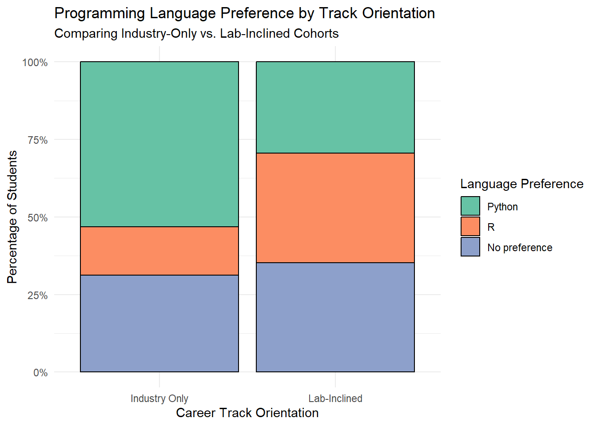

library(tidyverse)
library(here)
#Loading clean interest survey data with here (easier to access across different systems)
data_file <- here("data", "interest-clean.csv")
if (!file.exists(data_file)) {
data_file <- here("interest-clean.csv")
}
#Reading the dataset
interest <- read_csv(data_file, show_col_types = FALSE)
#Coding tracks into Industry Only vs. Lab-Inclined and setting factor levels
interest_comp <- interest %>%
mutate(
track_pref = case_when(
type == "ind" ~ "Industry Only",
type %in% c("lab", "both") ~ "Lab-Inclined"
),
track_pref = factor(track_pref, levels = c("Industry Only", "Lab-Inclined")),
coding_language = str_trim(language),
coding_language = factor(coding_language, levels = c("Python", "R", "No preference"))
)
#Checking values of two types to make sure we can actually run tests
interest_comp %>% count(track_pref)# A tibble: 2 × 2
track_pref n
<fct> <int>
1 Industry Only 32
2 Lab-Inclined 17#2x3 Contingency Table (Observed Counts)
observed_table <- table(Track = interest_comp$track_pref, Language = interest_comp$coding_language)
observed_table Language
Track Python R No preference
Industry Only 17 5 10
Lab-Inclined 5 6 6#Percentage of each track group preferring each language (Rows add up to 100, so its stratified by Industry-Only vs Lab-Inclined)
round(prop.table(observed_table, margin = 1) * 100, 1) Language
Track Python R No preference
Industry Only 53.1 15.6 31.2
Lab-Inclined 29.4 35.3 35.3#Pearson's Chi-Square Test for Independence
chi_test <- chisq.test(observed_table)
chi_test
Pearson's Chi-squared test
data: observed_table
X-squared = 3.3593, df = 2, p-value = 0.1864#Inspecting expected counts under the null hypothesis
chi_test$expected Language
Track Python R No preference
Industry Only 14.367347 7.183673 10.44898
Lab-Inclined 7.632653 3.816327 5.55102#Fisher's Exact Test due to small sample size in some cells (Lab-Inclined x R is below 5 for expected counts)
fisher_test <- fisher.test(observed_table)
fisher_test
Fisher's Exact Test for Count Data
data: observed_table
p-value = 0.1805
alternative hypothesis: two.sided#Proportion-filled bar chart comparing language breakdowns across the different tracks
ggplot(interest_comp, aes(x = track_pref, fill = coding_language)) +
geom_bar(position = "fill", color = "black") +
scale_y_continuous(labels = scales::percent) +
scale_fill_brewer(palette = "Set2") +
labs(
title = "Programming Language Preference by Track Orientation",
subtitle = "Comparing Industry-Only vs. Lab-Inclined Cohorts",
x = "Career Track Orientation", y = "Percentage of Students",
fill = "Language Preference"
) +
theme_minimal()